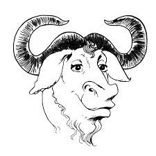

Este párrafo tiene insertada una imagen al principio del párrafo. Se trata del logotipo de GNU, GNU es un acrónimo recursivo que significa "GNU is Not Unix" (GNU no es Unix). GNU es un proyecto de software libre iniciado por Richard Stallman en 1984. La imagen forma parte del párrafo, es una letra más en la primera línea.
Este párrafo tiene insertada una imagen al principio del párrafo. Se trata del logotipo de GNU, GNU es un acrónimo recursivo que significa "GNU is Not Unix" (GNU no es Unix). GNU es un proyecto de software libre iniciado por Richard Stallman en 1984. La imagen debe flotar a la izquierda y el texto fluir a su derecha.
Este párrafo tiene insertada una imagen al principio del párrafo. Se trata del logotipo de GNU, GNU es un acrónimo recursivo que significa "GNU is Not Unix" (GNU no es Unix). GNU es un proyecto de software libre iniciado por Richard Stallman en 1984. La imagen debe flotar a la derecha y el texto fluir a su izquierda.
GNU + Linux = GNU/Linux. El término GNU/Linux reconoce la contribución del proyecto GNU en la creación de sistemas operativos libres.
GNU + Linux = GNU/Linux. El término GNU/Linux reconoce la contribución del proyecto GNU en la creación de sistemas operativos libres.
GNU + Linux = GNU/Linux. El término GNU/Linux reconoce la contribución del proyecto GNU en la creación de sistemas operativos libres.
El logotipo de GNU debe flotar a la izquierda y el párrafo debe fluir a la derecha
El logotipo de Linux debe flotar a la izquierda y el párrafo debe fluir a su derecha. Seguramente tanto la imagen como el texto estén a la derecha del logotipo de GNU.
Este párrafo tiene insertada una imagen flotante
Este párrafo y el anterior forman parte de una división.
Este párrafo ya está fuera de la división.
Este párrafo tiene insertada una imagen flotante
Este párrafo y el anterior forman parte de una caja. Este párrafo tiene la clase "limpia" y por tanto la propiedad clear.
Este párrafo ya está fuera de la caja.
Este párrafo tiene insertada una imagen flotante
Este párrafo y el anterior forman parte de una división. La caja tiene una altura y la propiedad overflow: hidden.
Este párrafo ya está fuera de la división.